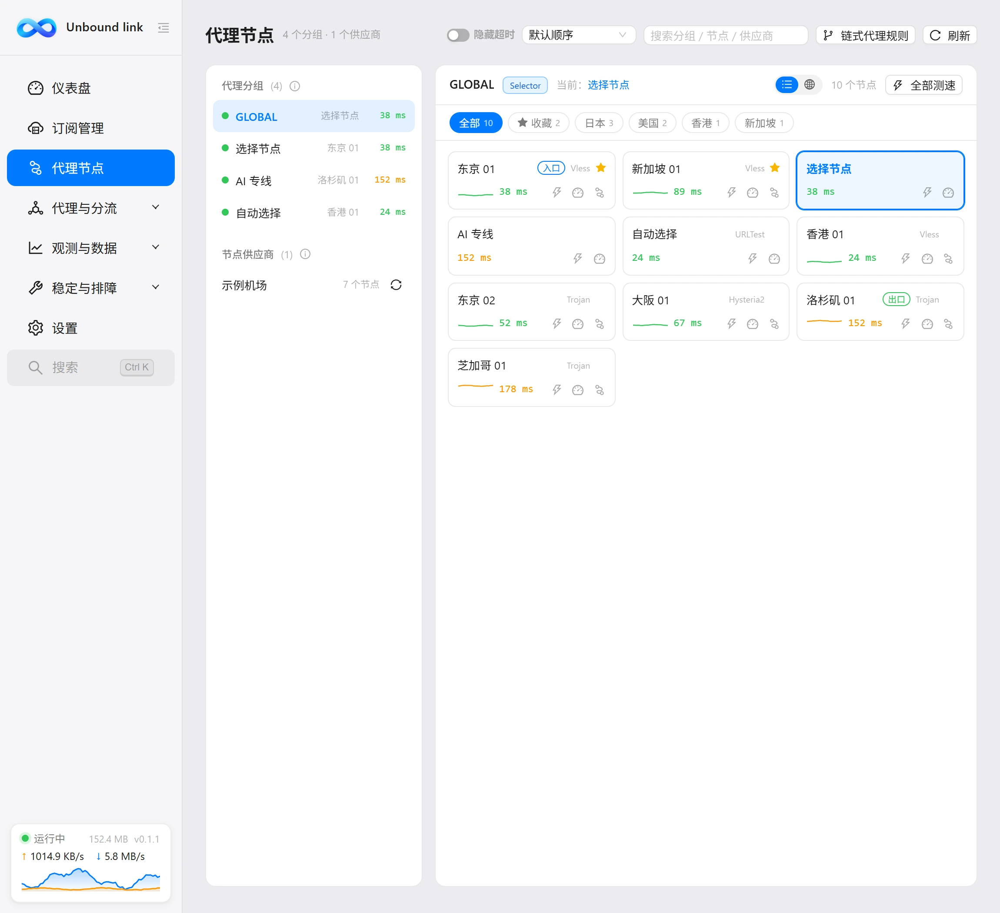
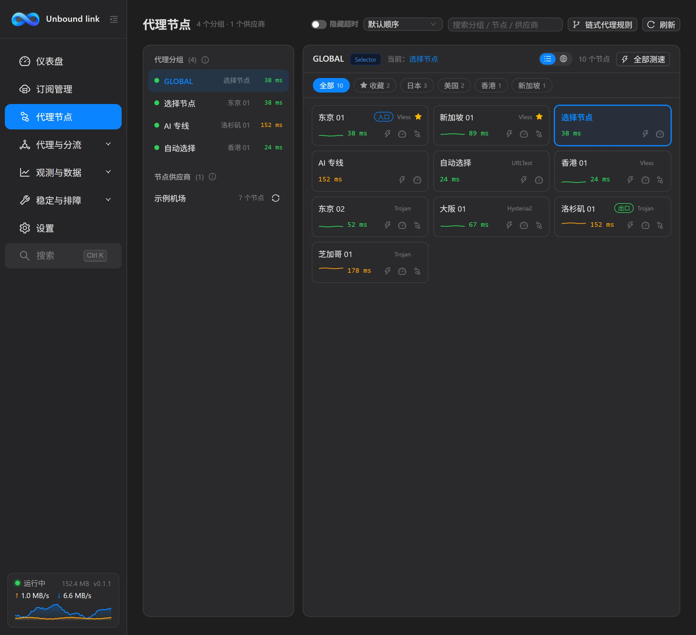

代理节点
本页浏览订阅带来的节点与分组，切换线路、测速、收藏，并为受限节点配置链式代理。


界面结构
页面左侧是一列条目，包含分组、节点来源（供应商 / 订阅）以及其他分组。点击某个条目，右侧就会显示它包含的节点。条目上有一个 ⟳ 图标，点它可「立即从订阅源更新节点列表」，把该条目下的节点重新拉取一遍。分组条目里会给出类似说明：其他分组按各自策略自动选路，例如自动选择延迟最低的节点。这类分组的线路由订阅决定，你不需要逐个指定。
搜索与排序
右侧顶部的工具区用来缩小范围、改变显示顺序。搜索框可搜分组、节点、供应商，并支持按地区缩写搜索，例如输入 hk。排序下拉提供默认顺序、按延迟排序、按名称排序三种。两者的区别在于：搜索是过滤，只留下匹配的条目；排序是重排，不减少条目。
| 工具 | 作用 |
|---|---|
| 搜索框 | 可搜分组、节点、供应商；支持地区缩写，如输入 hk。 |
| 排序下拉 | 默认顺序 / 按延迟排序 / 按名称排序。 |
| 隐藏超时 | 开启后测速超时的节点不显示，让列表更清爽；开关会记住状态，与设置页「隐藏测速超时节点」为同一项。 |
| 刷新 | 重新读取当前条目下的节点。 |
| 全部测速 | 对当前条目下所有节点批量测延迟。 |
筛选栏
工具区下方是筛选栏，包含地区筛选胶囊（含「全部」）与「只看收藏」。地区胶囊用来只看某个地区的节点，「只看收藏」用来只看星标过的节点。筛选栏可以按住鼠标左右拖动来平移查看，地区较多时不必挤在一屏里。
地图视图
节点列表右上角有一个「列表 / 地图」切换按钮。切到地图视图后，右侧会显示一幅世界地图，节点按所在国家和地区聚合成光点：光点落在哪个区域，你的节点就分布在哪个区域，全局分布一眼看清。
光点的大小代表该地区的节点数量，越大节点越多；颜色代表该地区内最优节点的延迟——绿色表示畅通，橙色表示一般，红色表示偏慢，灰色表示这个地区的节点都还没测过速。当前正在使用的节点所在地区会带一圈高亮描边，方便快速定位当前线路。鼠标移到光点上，可以查看地区名、节点数量与最低延迟。
点击任意光点即可按该地区筛选节点：视图自动切回列表，筛选栏中对应地区的胶囊被选中，右侧只保留该地区的节点，相当于一步完成「看地图 → 下钻列表」。点击筛选栏里的「全部」即可恢复。列表与地图共用同一份节点数据和筛选条件，来回切换不会丢失当前的选择与筛选状态。
地图数据内置在客户端里，渲染无需联网，不依赖任何在线地图服务。
节点卡片
每张节点卡片显示节点名与延迟（延迟带配色，方便一眼看出快慢）。卡片上还有几个可点元素：
| 元素 | 作用 |
|---|---|
| 星标 | 收藏该节点，收藏节点始终置顶。 |
| 闪电按钮 | 测试该节点延迟。 |
| 仪表按钮 | 下载测速，约 10 秒。 |
| 链式标记 | 参与链式代理的节点名后显示角色标签：入口（第一跳）/ 中转 / 出口（最终落地），鼠标悬停显示前后关系。 |
| 延迟趋势 | 开启「节点健康监控」后，卡片会附带一条近期延迟折线（红点表示该次测速失败），一眼看出节点是否稳定。 |
两种测速有什么不同
闪电按钮做的是延迟测试，结果与卡片上的延迟数值一致，适合快速比一比谁更近。仪表按钮做的是下载测速，大约需要 10 秒；测速时会临时切换到该节点，测完自动恢复原节点，所以测完不用手动切回去。需要对一大片节点快速筛选时，用工具区的「全部测速」更省事。
关于测速结果
测速结果的有效期约为 10 分钟，过期会自动清除，避免用旧数据误导判断。看到某个节点没有延迟数字，通常就是因为结果已经过期，再测一次即可。不想让超时节点留在列表里，可打开页面顶部的「隐藏超时」开关。
如果开启了「节点健康监控」（设置 → 网络），每次测速的结果还会被滚动记录下来，在节点卡片上画成一条延迟趋势折线：折线反映近期延迟水平，红点表示那次测速失败；当前正在使用的节点连续测速失败时，客户端会发送系统通知提醒，若同时开启了「掉线自动切换」，还会自动把线路切到备用节点（或组内延迟最低的可用节点）并通知切换结果。刚开启监控时折线数据还很少，多测几次或等自动测速跑几轮后就会逐渐丰富。
链式代理
有些节点本身受限、直连不稳，可以给它加一段前置中转，让流量先经中转再从这里出去——一组这样的关系就是一条「链路」。点击工具区的「链式代理规则」按钮打开链路编辑器（右侧抽屉）：左侧列出已保存的链路，右侧是可视化搭建区，完整的链路显示为「本机 → 环节 1 → 环节 2 → 互联网」。
搭建一条链路：点「新建链路」，在下方候选列表里点选环节依次加入。候选列表支持搜索与地区筛选、收藏节点置顶，并在右侧显示各节点最近一次延迟（来自内核测速记录，未测过的节点不显示），且汇总了全部直接节点，跨分组选节点不必来回切换左侧分组。已加入的环节再次点击即可移出；拖拽环节块可调整顺序；点环节之间的 + 可设定插入位置，之后再点选的环节会插到该位置。
| 元素 | 说明 |
|---|---|
| 代理组 | 只能作为链路第一环（入口），例如「香港自动组 → 落地节点」；普通节点可放在任意位置。 |
| 拖拽 | 按住环节块拖动即可调整它在链路中的位置。 |
| × 按钮 | 移出该环节；环节之间的 + 用于设定下一个环节的插入位置。 |
| 失效标记 | 环节已不在已启用的订阅中会标红提示；「移除失效链路」可一键清理，保存后生效。 |
点「保存并应用」后，整条链路会一次性写入并热重载运行配置，立即生效。使用时选中链路末端的节点即走完整链路，选中中间某环则只经过它之前的环节；链首环节自身不构成链路（它是被后续环节引用的中转）。链式之后延迟约为各段之和，通常会更慢一些，但可能更稳。
如果只是想给某一个节点快速指定前置，仍可以在节点卡片上点链式按钮，在弹窗里选择前置节点或代理组；这类快速规则同样会以链路形式出现在链路编辑器里，可继续编辑。
在仪表盘或本页切换节点后，内核会热重载配置，不需要重启内核，也不必停止后再启动。